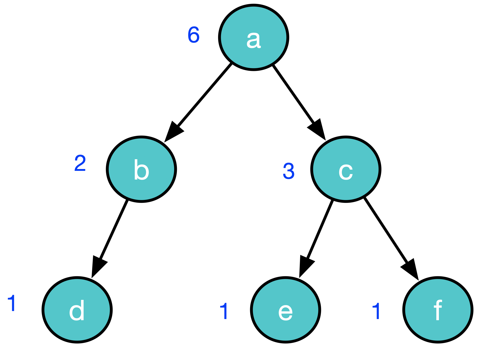

Class ImTree<A>
- All Implemented Interfaces:
Serializable,Iterable<A>
An immutable "binary tree".
Introduction
This class is the heart of the Immutable collections library. It is intended to be used only as a component of the other classes.
An
ImTree
is an AVL tree (a balanced binary tree) where each node stores some arbitrary data.
This means that we can guarantee that a search takes
O(log n)
operations, where
n
is the size of the tree and
log
is base 2
Note that this is not a traditional sorted binary tree .
It is
balanced
but there is no concept of the data that is being stored being
Comparable
- this functionality is added by ImSortedSet.
Essentially ImSortedSet is a traditional sorted binary tree and it uses this
class as part of its implementation.
Another class that uses this class is ImShelf.
A node in an
ImTree
is either a leaf node
Nil
or a
Node
that has two children that
are themselves
ImTrees
.
Each
Node
can contain a value of an arbitrary type and two Integers
representing the height and size of the tree rooted at that node. A
Nil
node has no data and no left or right child - these are set to
null
Note that this definition does not, of itself, specify that the tree is balanced. We enforce that invariant in each method that adds/removes nodes.
Consider an example tree with six non Nil nodes:
If we show the nil nodes then it looks like this:
Each
Node
also has a
size
value defined as the sum of the sizes of its children plus one.
nil Nodes are considered to have a size of zero.
The size represents how many non nil nodes there are in the tree rooted at n.

Each node also has a height value representing the size of the longest path from that node to a leaf node.
The height of a node is the maximum of the heights of its children. Nil nodes are considered to have a height of zero.
Let's annotate our example with the heights:

Because the tree is balanced, this means that the heights of the children of a node will differ by at most one.
Each node is considered to have a rank(AKA index) that represents its position in a pre-order scan of the tree.
Ranks start at one (exactly as Nature intended!)
Let's annotate our example with the ranks:

We don't store the ranks. To calculate the rank of a node or to find a node at a particular rank we can use the size of child nodes to derive the answer.
Don't go changing to try to please me...
These are
immutable
Collections so the
insert
and
remove
methods don't actually change existing trees.
Instead they create a new tree with a node added or deleted as appropriate, reusing as many of
the old nodes as possible.
References
Implementing Sets Efficiently in a Functional Language,Stephen Adams
- See Also:
-
Method Summary
Modifier and TypeMethodDescriptionThe string representation of the element at the root of this treebooleanComparesanotherwiththisfor equality.The element at the root node of this treeintThe height of the treegetLeft()The left sub-tree ofthis.getNodeAtIndex(int indexStartingAtOne) The node at indexindexStartingAtOneintgetRank()Get the rank of the root node of this tree in this tree.getRight()The right sub-tree ofthis.inthashCode()The (cached) hashcode for this object.Insert a new node with the valueelementToAddat indexindexStartingAtOnebooleantrueif the tree is balancediterator()An iterator over the elements inthis.<O> ImTree<O>The tree that has the same shape asthisand where each element is the result of evaluating the single argument functionfnon the corresponding element ofthis.static <A> ImTree<A>The tree that contains the elements ofleftin their original order followed by the elements ofrightin their original orderstatic <A> ImTree<A>newBalancedTree(A newA, ImTree<A> newLeft, ImTree<A> newRight) A new balanced tree formed from elementnewAand the left subtreenewLeftand the right subtreenewRight.static <A> ImTree<A>Nil()The empty treestatic <A> ImTree<A>on(A a) A tree containing a single element,astatic <A> ImTree<A>on(Collection<A> elements) A tree containing the elementselementsremove(int indexStartingAtOne) Return a tree that is the same asthisbut without the element stored at the node with indexindexStartingAtOneThe tree with its root removed.replaceAtIndex(int indexStartingAtOne, A newElement) The tree that isthiswith the elementindexStartingAtOnereplaced withnewElementintsize()The number of elements inthisAn ascii-art diagram of this treetoList()The list that is the pre-order scan of the elements of this treetoString()A String representation of this objectMethods inherited from interface java.lang.Iterable
forEach, spliterator
-
Method Details
-
Nil
The empty tree -
on
A tree containing a single element,a -
on
A tree containing the elementselements -
newBalancedTree
A new balanced tree formed from element
newAand the left subtreenewLeftand the right subtreenewRight. -
merge
The tree that contains the elements of
leftin their original order followed by the elements ofrightin their original order -
insert
Insert a new node with the value
elementToAddat indexindexStartingAtOneIf we add node g to this example at index 3 we will generate a new tree with three new nodes a', b' and g. None of the old nodes will be affected.
a a' / \ / \ / \ / \ b c ----+ b' | / / \ | / \ | d e f | | g | | | | | +-----------------------+ | | | +----------------+ -
replaceAtIndex
The tree that is
thiswith the elementindexStartingAtOnereplaced withnewElement -
getNodeAtIndex
The node at indexindexStartingAtOne -
remove
Return a tree that is the same as
thisbut without the element stored at the node with indexindexStartingAtOne -
removeRoot
The tree with its root removed. We are removing a in the following diagrams a => c / \ - c a => b / \ b - a => merge(b,c) / \ b c -
toString
A String representation of this object -
toBoxString
An ascii-art diagram of this tree
For eaxample:
d / \ b f / \ / a c e -
elementToString
The string representation of the element at the root of this tree -
isBalanced
public boolean isBalanced()trueif the tree is balanced -
toList
The list that is the pre-order scan of the elements of this tree -
map
The tree that has the same shape as
thisand where each element is the result of evaluating the single argument functionfnon the corresponding element ofthis. -
getElement
The element at the root node of this tree -
getLeft
The left sub-tree of
this. -
getRight
The right sub-tree of
this. -
getHeight
public int getHeight()The height of the tree -
size
public int size()The number of elements in
this -
hashCode
public int hashCode()The (cached) hashcode for this object. -
getRank
public int getRank()Get the rank of the root node of this tree in this tree.
-
iterator
An iterator over the elements in
this.Note that the iterator returned by this method will throw an
UnsupportedOperationExceptionin response to itsremovemethod. -
equals
Compares
anotherwiththisfor equality. Returnstrueif and only if the specified object is also anImTree, both trees have the same size, and all corresponding pairs of elements in the two trees are equal .e1ande2being equal meanse1.equals(e2) == true
-